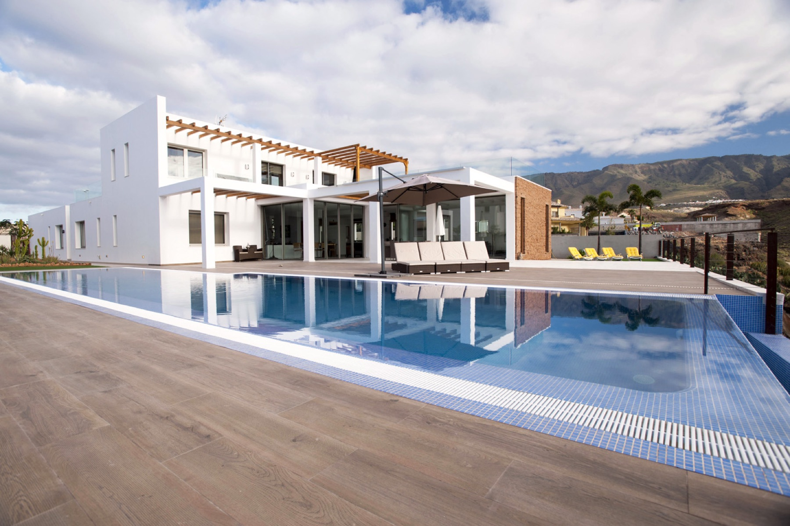
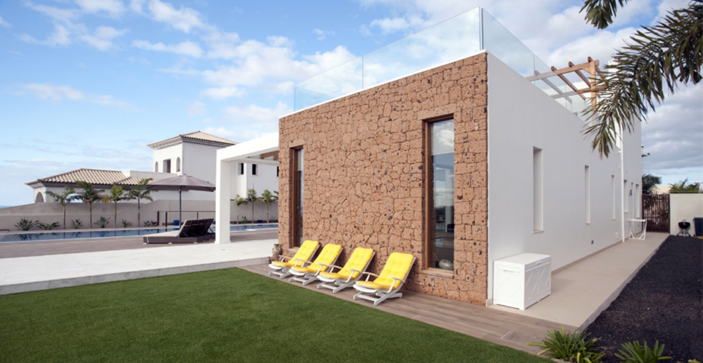
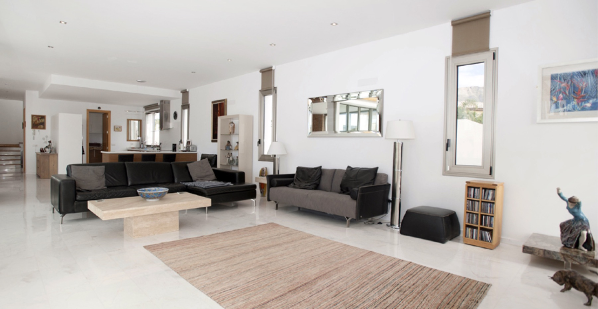

Villa Infiniti was Stazio's first flagship development. Ground broken in 2015, delivered fully finished and sold in 2017. A two-year build — acquisition, architectural direction, site supervision, final handover — all signed off in person. A private Adeje villa with four en-suite bedrooms, 350 m² of interior on a 2,200 m² plot, heated pool, and a mature tropical garden that grew into the architecture over time. Villa Infiniti fue la primera promoción emblemática de Stazio. Obras comenzadas en 2015, entregada completamente terminada y vendida en 2017. Dos años de obra — adquisición, dirección arquitectónica, seguimiento en obra, entrega final — todo firmado en persona. Una villa privada en Adeje con cuatro dormitorios en suite, 350 m² de interior sobre una parcela de 2.200 m², piscina climatizada, y un jardín tropical maduro que fue creciendo dentro de la arquitectura con el tiempo.
No longer availableYa no disponible





Villa Infiniti began the way every Stazio development begins — with a plot of land he could see the finished house on, years before a single line was drawn. In 2015 he acquired the parcel: 2,200 m² on a south-facing Adeje slope, the kind of plot where the architecture either fights the landscape or lets it in. He chose the second path.
Two years of building. Four en-suite bedrooms laid out so each would catch the morning light. A heated pool sized for year-round use, not just summer. An open-plan living/dining/kitchen that opened directly onto the pool terrace. A mature tropical garden planted early so it would be established by handover.
Delivered fully finished in 2017 — kitchen in, bathrooms tiled, garden mature, pool warm. The buyer walked in and lived in it the same week. That's the standard every TRI development has been held to since.
Villa Infiniti comenzó como empieza cada promoción de Stazio — con una parcela en la que él ya veía la casa terminada, años antes de que se trazara la primera línea. En 2015 adquirió el terreno: 2.200 m² en una ladera orientada al sur en Adeje, el tipo de parcela donde la arquitectura o pelea contra el paisaje o lo deja entrar. Eligió la segunda opción.
Dos años de obra. Cuatro dormitorios en suite distribuidos para captar cada uno la luz de la mañana. Piscina climatizada dimensionada para el uso anual, no solo en verano. Un espacio diáfano de salón-comedor-cocina abierto directamente a la terraza de la piscina. Un jardín tropical maduro plantado pronto para que estuviese consolidado a la entrega.
Entregada completamente terminada en 2017 — cocina instalada, baños alicatados, jardín maduro, piscina templada. El comprador entró y la habitó esa misma semana. Ese es el estándar al que se ha mantenido fiel cada promoción de TRI desde entonces.
Villa Infiniti is no longer on the market — it was handed over to its owner in 2017 and hasn't come back for sale since. It lives on this site as part of TRI's development track record: a house Stazio built from the ground up, delivered on spec, sold on handover. Alongside Villa Malibu (2018), La Maleza (2002) and Villa Arizona (2023), it's the portfolio that tells you what TRI's agency-plus-developer model actually looks like.
Villa Infiniti ya no está en el mercado — fue entregada a su propietario en 2017 y no ha vuelto a la venta desde entonces. Aparece en este sitio como parte del historial de promociones de TRI: una casa que Stazio construyó desde cero, entregada llave en mano, vendida en el momento de la entrega. Junto con Villa Malibu (2018), La Maleza (2002) y Villa Arizona (2023), es la cartera que muestra lo que realmente significa el modelo agencia-más-promotor de TRI.
If you're interested in a commission — land acquired, house designed and built to your brief, delivered finished — Villa Infiniti is the kind of project that sets the reference. Talk to us.
Si te interesa un encargo — parcela adquirida, casa diseñada y construida a medida, entregada terminada — Villa Infiniti es el tipo de proyecto que sienta la referencia. Hablemos.
Villa Infiniti is sold, but this is exactly the kind of project TRI still develops — acquired, built, delivered, handed over. Stazio replies personally within the day. Villa Infiniti está vendida, pero este es exactamente el tipo de proyecto que TRI sigue promoviendo — adquirir, construir, entregar llave en mano. Stazio responde personalmente en el día.